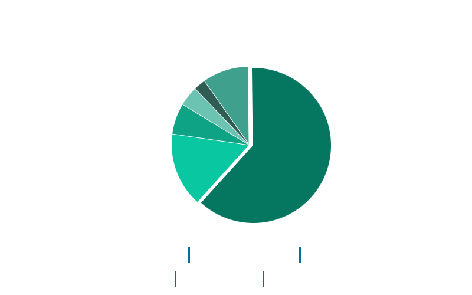

Responsive Images
Sebastian Huber
http://pri.shuber.dev.nil
© Universal Pictures
Warum responsive images verwenden?
Deshalb!
© Universal Pictures
Das Ergebnis, wenn man nur ein Bild verwendet welches auf die viewport Breite skaliert.

© Universal Pictures
Die Verwendung mehrer Bilder, die speziell für den viewport hinterlegt wurden.
Früher sagte man:
"This website is best viewed at 800x600 in Internet Explorer version 5.3 or above."
Heute müsste man sagen:
"This website is best viewed on WebKit"
oder
"This website is best viewed on either a 500 € smartphone/tablet or a 3000 € laptop with an ultra high-resolution display.
© Universal Pictures
Durschnittlich geladene Bytes einer Content Seite
1874 kB
 Quelle: http://httparchive.org/interesting.php?a=All&l=Oct%2015%202014&s=All72%
der responsive Websites schicken etwa
die Gleiche Datenmenge an Mobile & Desktop Nutzer
Quelle: http://www.guypo.com/?p=3374
Es lohnt sich zu optimieren!

© Universal Pictures
Desktop: 1024x576 Pixel
264 KB

© Universal Pictures
Tablet: 768x432 Pixel
264 KB 177 KB
33% Einsparung

© Universal Pictures
Mobile: 320x180 Pixel
85% Einsparung
- Bilder werden mit unterschiedlicher Auflösung für normale und hochauflösende Displays ausgegeben
- Bilder innerhalb eines flexiblen Web-Layouts (responsive Layout) werden mit unterschiedlicher Abmessung für verschiedene Viewport-Größen ausgegeben
- spart Ressourcen (Beispiel bild.de -> 3,7MB reine Bilder unter Desktop zu 288kb für mobile)
- da keine unnötig großen Bilddateien geladen werden
- somit lädt die Seite schneller
eine mögliche Lösung?
adaptive-images.com
- von Matt Willcox (Filament Group)
- dieses PHP-basierte Skript liefert je nach Device das passende Bild aus
- dazu kommen bestehende Media Queries nach dem Mobile-first-Prinzip zum Einsatz
Voraussetzung für adaptive-images
- der Einsatz von PHP
- der Einsatz von Javascript
- der Einsatz einer .htaccess-Datei
- der Einsatz von Cookies
Doch nicht ganz so optimal!

© Universal Pictures
einfachere Lösung:
picture-Element
oder
srcset?
picture-Element

Quelle: http://responsiveimages.org/demos/basic-implementation/index.html
Can I use Picture-Element?
Browser support picture-Element: http://caniuse.com/#search=picturesrcset & sizes
scrset
Mit srcset erstellen wir eine Liste an Bildquellen.
Für jede Bildquelle legen wir fest wie breit die Grafik in Pixeln ist.
srcset
src="" wird nur noch als Fallback für ältere Browser genommen
Quelle: http://responsiveimages.org/demos/on-a-grid/index.htmlCan I use srcset?
Browser support srcset: http://caniuse.com/#search=srcsetsizes
Über sizes wird festgelegt, wie breit eine Grafik dargestellt werden soll.
Diese Information würde ohne sizes fehlen.
srcset zusammen mit sizes

allgemeines zu
picturefill
- ermöglicht den Einsatz im HTML-Quelltext
- arbeitet mit div-Elementen
- bietet damit hohe Abwärtskompatibilität sowie Standardkonformität zu HTML5
- basiert auf JavaScript und ist nicht an jQuery oder eine andere Bibliothek gebunden
Das macht diese Lösung schlank und schnell – was sich auch auf die Geschwindigkeit der Website positiv auswirkt, schließlich wird picturefill im <head>-Bereich eingebunden.
Download: https://github.com/scottjehl/picturefill
- Chrome bietet in der neusten Version bereits den nativen Browsersupport.
- Die neuste Firefox Version ermöglicht dies in den Einstellungen (about:config) zu aktivieren.
1x, 2x, 3x, w und vw?
1x, 2x & 3x
1x entspricht einem normalen Display mit einfacher Pixeldichte.
2x steht für hochauflösende Displays mit einer Pixeldichte von 2 (z. B. das Retina-Display von Apple)
3x und mehr steht für noch höher auflösende Displays wie das des HTC One, iPhone 6 etc.
Mehr Informationen unter: http://cssmediaqueries.com/target/w & vw
Der w-Wert beschreibt die physikalische Breite des Bildes in Pixeln. Aso die Breite die man beispielweise in Photoshop innerhalb des »Für Web speichern«-Dialogs sehen kann.
vw (Viewport-Width = Viewportbreite)
Müssen uns die Designer jetzt
3, 4, 5 oder mehr Bilder
rausspeichern?
Ja! aber ...
Idee = Stapelverarbeitung mit
"Batch Scripting"
Mehr Informationen unter: http://en.wikibooks.org/wiki/Windows_Batch_Scripting
Denn wir Entwickler sind doch
selbstständig!
© Universal Pictures
convert-picture.bat mit
ImageMagick
- Stapelverarbeitung über Kommandozeile
- freies Softwarepaket
- kann mehr als 100 der üblichen Bildformate ...
- ... lesen, verändern und schreiben
convert-picture.bat mit
ImageMagick
Grunt responsive images
Möglichkeiten mit:
GraphicsMagick & ImageMagick
Mehr Informationen unter: https://github.com/andismith/grunt-responsive-imagesweitere Quellen:
http://www.hongkiat.com/blog/serving-responsive-images/
http://blog.kulturbanause.de/2014/09/responsive-images-srcset-sizes-adaptive/